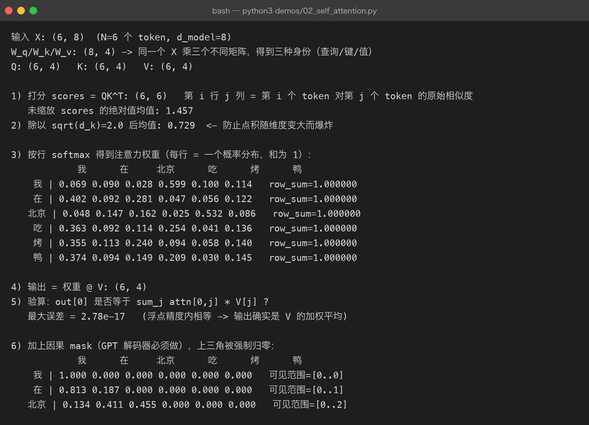
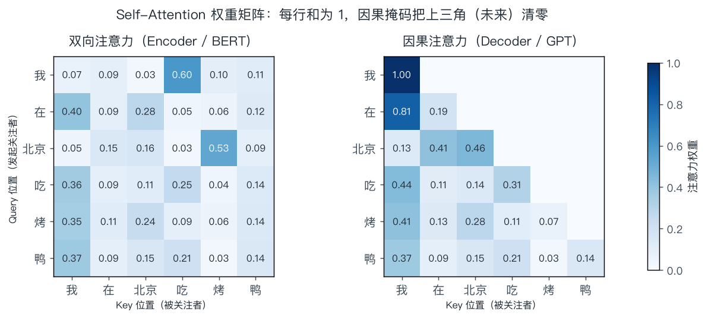

02 · 注意力机制：让每个 token 自己决定"看哪里"
一句话结论：注意力机制做的只有一件事——对序列做加权平均，而权重由"当前 token 想要什么"和"其他 token 能提供什么"的匹配程度决定。 它解决了 RNN 的两个死穴：不能并行、长距离信息会被压扁。
本章是全书最重要的第一章。Transformer 的其他零件（残差、LayerNorm、FFN、位置编码）都是为了让这一层能稳定地叠很多层而存在的。
2.1 先看问题：RNN 为什么不够用
在注意力出现之前，序列建模的主流是 RNN / LSTM：从左到右读，把历史压进一个固定长度的隐状态 h_t。
RNN: h1 ──► h2 ──► h3 ──► ... ──► h100
↑每个 h 都要等上一个算完（串行）
↑第 100 步要用第 1 步的信息，得穿过 99 次传递（梯度消失 / 信息被挤压）| 问题 | 具体表现 |
|---|---|
| 串行 | 第 t 步依赖第 t−1 步，GPU 的并行能力用不上，训练慢 |
| 信息瓶颈 | 无论前面多长，都被塞进一个固定维度向量；"第 1 个词"和"第 100 个词"抢同一块带宽 |
| 长距离依赖退化 | 距离越远，梯度越容易消失（LSTM 缓解但没根治） |
注意力的回答很直接：既然隐状态是瓶颈，那就不压缩——让每个位置直接去"看"所有位置，按相关度加权取信息。代价是从 O(n) 变成 O(n²)，但这笔账在现代硬件上算得过来。
2.2 直觉：图书馆检索
把注意力想成一次检索：
| 角色 | 类比 | 作用 |
|---|---|---|
| Query（查询） | 你手里的检索词 | "我现在需要什么信息" |
| Key（键） | 每本书的标题/标签 | "我能提供哪类信息" |
| Value（值） | 书的正文 | "实际内容是什么" |
流程：用 Query 和每个 Key 比对相似度 → 得到一组权重（和为 1）→ 按权重把 Value 加权求和。
Query: "我在找【吃的】" (当前 token: 烤)
Key1: "我" 相似度 0.07
Key3: "北京" 相似度 0.03
Key4: "吃" 相似度 0.60 <-- 最相关
Key6: "鸭" 相似度 0.11
↓ softmax 归一化
权重: [0.07, 0.09, 0.03, 0.60, 0.10, 0.11] 和 = 1
↓ 加权求和
输出 = 0.07·V(我) + 0.09·V(在) + ... + 0.11·V(鸭)关键点：Q、K、V 全部来自同一个输入 X——所以叫 Self-Attention（自注意力）。三个不同的线性投影把同一个 X 映射成三种角色：
| 矩阵 | 形状 | 作用 |
|---|---|---|
| n 个 token，每个 d_model 维 | ||
| 学出来的三套投影 | ||
| 同一批 token 的三种"身份" |
面试常问：为什么 Q/K/V 要分开？如果 K 和 Q 用同一个投影，相似度矩阵就变成对称的（），"我关注你"和"你关注我"永远同强度，表达力被削掉一半。V 单独一套，则是因为"相关性高"和"内容该抄多少"是两件事。
2.3 公式拆解与真实计算
2.3.1 完整公式
拆成四步看：
| 步 | 运算 | 形状变化 | 含义 |
|---|---|---|---|
| ① | 两两相似度打分矩阵 | ||
| ② | 缩放，防止 softmax 过饱和（见 2.4） | ||
| ③ | （按行） | 每行是一个概率分布，和为 1 | |
| ④ | 按权重对 V 加权求和 |
2.3.2 跑一遍真的（demos/02_self_attention.py）
6 个 token、d_model=8、d_k=4 的真实运行结果：

三个关键读数：
- 第 3 段的权重矩阵每行和都是 1.000000 —— softmax 是按行做的（对"被关注者"这一维归一化）。
- 第 5 段最大误差 2.78e-17 —— 输出确实等于 ，误差只是浮点舍入。这验证了"注意力 = 加权平均"这个本质。
- 第 6 段加因果掩码后，上三角全为 0 —— 每行可见范围
[0..i]，且行和仍为 1。
同一批数据画成热力图，左右对照能看清掩码做了什么：

左图（双向）每个位置都能看全句；右图（因果）第 i 行只在 ≤ i 的格子有值——这就是 Encoder 和 Decoder 的唯一本质区别。
2.3.3 一个容易忽略的性质：注意力是"置换等变"的
把输入 token 的顺序打乱，输出会以同样方式打乱，但每个位置的数值不变：
这意味着自注意力本身完全不知道顺序！ "我在北京吃烤鸭"和"鸭烤吃京北在我"在这层看来是一样的。所以必须额外注入位置信息——这就是位置编码存在的原因。
2.4 为什么必须除以 √d_k
这是面试里区分"背过公式"和"懂了"的经典问题。
推导思路（完整版见 第 09 章 · Self-Attention 的缩放）：
设 的各分量独立、均值 0、方差 1，则点积的方差是：
也就是点积的典型大小是 ，随维度增长。而 softmax 的输入一旦数值过大，分布就会极端化：
| softmax 输入尺度 | 分布形态 | 梯度状况 |
|---|---|---|
| 小（~1） | 平滑，各位置都能分到权重 | 梯度良好 |
| 大（±20） | 接近 one-hot | softmax 饱和区，梯度 ≈ 0，学不动 |
除以 把点积的方差拉回 1，softmax 就工作在"有梯度"的区间。这不是经验技巧，而是必须做的归一化。
真实数据对照（demos/02_self_attention.py 的输出）：
| 指标 | 未缩放 | 除以 √d_k = 2.0 |
|---|---|---|
| 打分绝对值均值 | 1.457 | 0.729 |
补充：这也是为什么后来出现 QK-Norm、softmax 前加 tanh 等变体——一旦维度继续变大（如 128 以上、或训练不稳定时），缩放系数还需要继续调。
2.5 掩码（Mask）：两条不同的"禁令"
注意力矩阵上叠一个可加性掩码（加 −∞ 或很大的负数），softmax 后对应位置概率为 0。
2.5.1 Padding Mask —— 别看 PAD
批处理时长短不一的句子要用 PAD 补齐：
句子 A: 我 在 北京 吃 烤 鸭 [PAD] [PAD]
句子 B: 你 好 [PAD] [PAD] [PAD] [PAD] [PAD]如果不管它，模型会把"关注 PAD"学成一个有意义的动作，污染表示。做法：
scores = scores.masked_fill(pad_mask, -1e9) # pad_mask: (batch, 1, 1, T)2.5.2 Causal Mask —— 别看未来
解码器生成时，第 i 个位置不能提前看到 i+1：
允许位置: 被屏蔽位置:
1 . . . . . 。 X X X X X
1 1 . . . . 。 。 X X X X
1 1 1 . . . 。 。 。 X X X
1 1 1 1 . . 。 。 。 。 X X
1 1 1 1 1 . 。 。 。 。 。 X
1 1 1 1 1 1 。 。 。 。 。 。为什么必须屏蔽？因为训练时整个序列一次喂入，如果不屏蔽，模型在预测第 3 个 token 时能直接"偷看"第 4 个 token 的输入——训练损失会降得很漂亮，但推理时根本看不到未来，效果直接崩。这种错误叫 information leakage / 标签泄漏。
| 掩码 | 用在哪 | 忽略的对象 |
|---|---|---|
| Padding mask | Encoder + Decoder | 补齐用的 PAD token |
| Causal mask | Decoder（包括所有 GPT 系模型） | 当前位置之后的 token |
| 两者组合 | Decoder 训练时 | PAD + 未来 |
坑：现代推理框架里，同时用两种 mask 容易和 KV Cache 的偏移搞混（缓存长度 ≠ 当前序列长度），表现为"首 token 正常、后续开始乱说"。这也是 第 07 章 要处理的问题。
2.6 多头注意力（MHA）：并行地看多种关系
单个注意力头只能输出一种加权平均模式。但语言里的关系是多种多样的：语法主谓、指代、修饰、位置邻近……
做法：把 d_model 切成 h 份，每份独立做一次注意力，最后拼回来。
流程图（简化）：
X— X (n × 512)S1— 切成 h=8 份 每份 d_head = 64H1— 头 1: Q1K1V1 → 注意力 → O1H2— 头 2: Q2K2V2 → 注意力 → O2H3— ...H8— 头 8: Q8K8V8 → 注意力 → O8C— 拼接 concat (n × 512)W— 输出投影 Wo (512 × 512)O— 输出 (n × 512)
维度与参数量（以 d_model=512, h=8 为例）：
| 项 | 计算 | 数量 |
|---|---|---|
| d_head | 512 / 8 | 64 |
| W_Q, W_K, W_V | 各 512×512 | 3 × 262,144 |
| W_O | 512×512 | 262,144 |
| 单头方案的参数量 | 512×512 × 3 + W_O | 完全相同 |
结论：多头不增加参数量，只是把同一块参数预算切成多个"视角"。所以多头几乎是免费的午餐——但它让不同头可以分工（真实模型里确实能观察到"位置头""语法头""指代头"）。
| 名词 | 含义 | 代表模型 |
|---|---|---|
| MHA（Multi-Head） | 每个头都有自己的 K/V | GPT-2、LLaMA-1 早期 |
| MQA（Multi-Query） | 所有头共享一份 K/V | PaLM、Falcon |
| GQA（Grouped-Query） | 头分成若干组，组内共享 K/V | LLaMA-2/3、Qwen、Mistral |
为什么关心这个？因为它直接决定 KV Cache 的大小（第 07 章）：
| 方案 | 头数 : KV 头数 | KV Cache 相对大小 | 生成速度 | 效果 |
|---|---|---|---|---|
| MHA | 32 : 32 | 100% | 慢（显存带宽吃紧） | 最好 |
| GQA | 32 : 8 | 25% | 快 | 接近 MHA |
| MQA | 32 : 1 | 3% | 最快 | 略有损失 |
GQA 是当前主流折中：训练时用 MHA 的稳定性，推理时享受 MQA 的省显存。
2.7 复杂度：注意力的代价
单层的计算量与显存量（n = 序列长度，d = d_model）：
| 项 | 复杂度 | n=4k, d=4096 时的量级 |
|---|---|---|
| QKV 投影 | 3 × 4096² × 4096 | |
| 注意力打分 QKᵀ | 4096² × 4096 | |
| 加权求和 AV | 同上 | |
| 注意力矩阵显存 | per head | 4096² × 2 bytes × 32 头 ≈ 1 GB |
序列长度翻倍，注意力部分开销变 4 倍 —— 这是长上下文（128k、1M）的根本障碍。
主流应对手段：
| 手段 | 思路 | 代表 |
|---|---|---|
| FlashAttention | 不把 n×n 矩阵写回显存，分块在 SRAM 里算（精确等价，只是省 IO） | 现在几乎所有训练框架默认 |
| 稀疏/滑窗注意力 | 只算局部窗口 + 少量全局 token | Longformer、Mistral 的 SWA |
| 线性注意力 / SSM | 换掉 softmax 结构，把复杂度降到 O(n) | Mamba、RWKV（但表达力有取舍） |
| KV Cache 压缩 | GQA / MLA / 量化 | LLaMA-3、DeepSeek-V2 的 MLA |
重要区分：FlashAttention 不改变数学结果，它优化的是显存访问；稀疏注意力和 Mamba 改变的是计算的内容，属于模型结构变化。二者不可混为一谈。
2.8 常被误解的点
| 误解 | 真相 |
|---|---|
| "注意力权重高 = 因果重要" | 权重是信息路由，不代表因果。很多头可以被剪掉而不掉点（冗余） |
| "多头就是在多个维度上做 attention" | 多头是把 d_model 切分给多个独立子空间，每个头有自己的 W_Q/W_K/W_V |
| "FlashAttention 是近似算法" | 它是精确计算，只是改变了显存读写顺序（tiling + 重算） |
| "自注意力能感知顺序" | 不能。顺序信息全部来自位置编码（或 RoPE 旋转） |
| "PAD 不影响结果" | 不加 padding mask 会污染结果，尤其在短句占比高的 batch 里 |
| "缩放就是调超参" | √d_k 是方差归一化的必然结果，不是可调超参 |
2.9 动手
python3 demos/02_self_attention.py # 本文件所有数值的真实来源
python3 demos/make_figures.py # 重画 attention-heatmap.png建议改的三处：
- 把
D_K从 4 改成 16、32，观察第 2 段"未缩放打分均值"如何随 √d_k 增长 → 亲手验证缩放的必要性。 - 把
np.random.randn(D_MODEL, D_K) * 0.35里的 0.35 改成 2.0，观察注意力矩阵退化成接近 one-hot。 - 把因果 mask 那段的
k=1改成k=2，理解"屏蔽两条对角线"意味着什么（提示：某些训练目标里会用到）。
2.10 自查问题
- Q/K/V 各自扮演什么角色？为什么三个投影不能共用一套？
- 写出注意力公式，并说明每一步的张量形状变化。
- 为什么除以 √d_k？如果去掉会怎样？（要能从方差角度说）
- Padding mask 和 causal mask 分别解决什么问题？只加一个会出错吗？
- 多头注意力为什么"不增加参数量"？它带来了什么好处？
- MHA / MQA / GQA 的差别在哪一层？为什么要关心？
- 为什么说自注意力"置换等变"？这引出哪个必需组件？